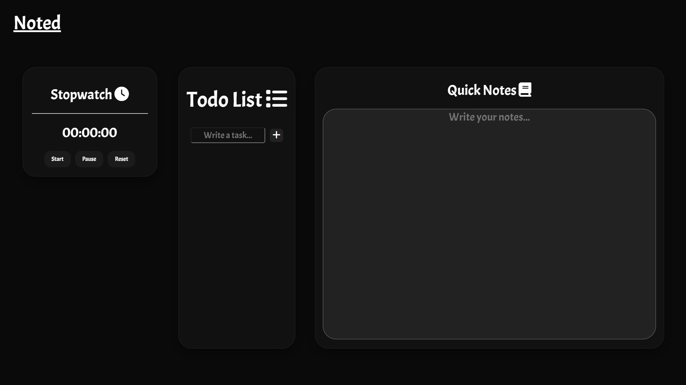
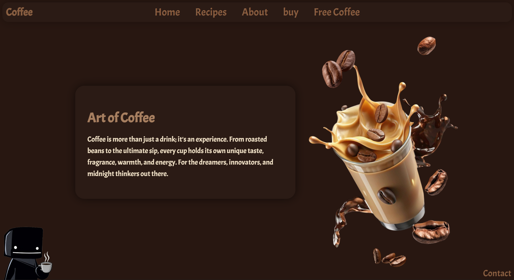

This project uses an ultrasonic sensor to measure a person's height automatically. The sensor calculates the distance between the sensor and the top of the person's head using ultrasonic waves and the estimated height.
An Arduino-based radar project that uses an HC-SR04 ultrasonic sensor and a servo motor to detect nearby objects and display them on a live radar-style interface. The sensor continously scans different angles, measures object distance using ultrasonic wave.

Noted is a handy website where you can easily keep track of the time you spend coding or studying. It features an integrated to-do list to organize your daily tasks and a quick-notes section to jump-start your productivity and jot down sudden ideas. By bringing these tools together into one simple interface, it eliminates distractions and helps you maintain a deep state of focus for a long time.

I have developed a coffee website that was intended as a project for the Hack Club “Swirl” workshop, and it is totally dedicated to discovering the craft and the magic of making great coffee. It is an aesthetically pleasing environment created especially for the dreamers, innovators, and night owls that love their coffee. On the website, one can discover different recipes, find out the distinctive flavor of various blends, buy coffee beans, and listen to the background soundtrack. I have decided to keep the design as simple and calm as possible in order to demonstrate my work on the project.